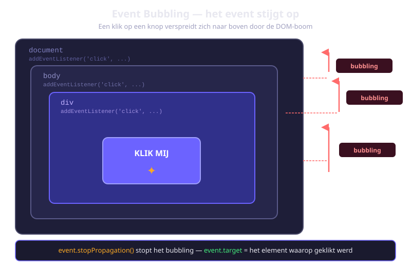
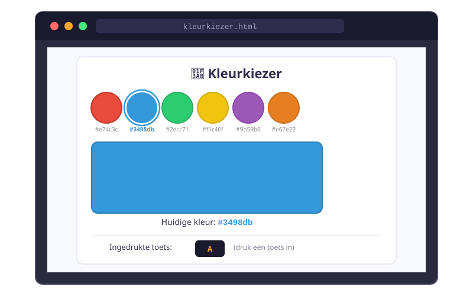

Events & Luisteraars
- Uitleggen wat events zijn en hoe event-driven programmeren werkt
- Een event listener toevoegen aan een element met
addEventListener - Het event-object gebruiken om informatie over een event op te halen (
e.target,e.type,e.preventDefault()) - De veelgebruikte events opnoemen en correct toepassen
- Meerdere listeners registreren op hetzelfde element
- Event delegation uitleggen en toepassen om dynamische elementen te beheren
- Een interactieve kleurkiezer bouwen met events
5.1 Wat zijn events?
Een event is een signaal dat iets is gebeurd in de browser. Dat kan van alles zijn:
- De gebruiker klikt op een knop
- De gebruiker drukt een toets in
- De muis beweegt over een element
- Een formulier wordt ingediend
- De pagina is volledig geladen
JavaScript gebruikt een event-driven model: in plaats van continu te checken of iets is gebeurd (polling), registreer je een functie die automatisch opgeroepen wordt zodra een bepaald event plaatsvindt. Die functie heet een event handler of callback.
"Don't call us, we'll call you." — Jij registreert een handler, de browser roept die op wanneer nodig. Efficiënt en overzichtelijk.
5.2 addEventListener
Syntax
element.addEventListener(eventType, callbackFunctie);Basisvorm
const knop = document.querySelector('#mijn-knop');
knop.addEventListener('click', function() {
console.log('Er is geklikt!');
});Je kan ook een vooraf gedefinieerde functie meegeven (zonder haakjes!):
function reageerOpKlik() {
console.log('Geklikt!');
}
knop.addEventListener('click', reageerOpKlik);
// Correct: reageerOpKlik zonder ()
// FOUT: reageerOpKlik() — dan roep je de functie onmiddellijk aan!Arrow functions
knop.addEventListener('click', () => {
console.log('Geklikt!');
});
5.3 Het event-object
Elke callback-functie kan automatisch een event-object ontvangen met informatie over het event.
knop.addEventListener('click', function(e) {
console.log(e.type); // "click"
console.log(e.target); // het element waarop geklikt werd
});e.target — het element dat het event veroorzaakte
document.querySelector('ul').addEventListener('click', function(e) {
console.log(e.target); // het specifieke element
console.log(e.target.tagName); // bijv. "LI"
console.log(e.target.textContent); // de tekst van dat element
});e.preventDefault() — standaardgedrag voorkomen
// Formulier NIET versturen bij submit
const formulier = document.querySelector('form');
formulier.addEventListener('submit', function(e) {
e.preventDefault(); // Browser stuurt het formulier NIET op
console.log('Formulier onderschept!');
});
// Link NIET navigeren bij klik
const link = document.querySelector('a.intern');
link.addEventListener('click', function(e) {
e.preventDefault();
console.log('Navigatie geblokkeerd');
});5.4 Veelgebruikte events
Muis-events
| Event | Wanneer |
|---|---|
click | Gebruiker klikt (mousedown + mouseup) |
dblclick | Dubbele klik |
mouseover | Muis beweegt naar een element |
mouseout | Muis beweegt weg van een element |
mousemove | Muis beweegt over een element |
const box = document.querySelector('.box');
box.addEventListener('mouseover', function() {
box.style.backgroundColor = 'lightblue';
});
box.addEventListener('mouseout', function() {
box.style.backgroundColor = '';
});Formulier-events
| Event | Wanneer |
|---|---|
input | Elke keer de waarde van een invoerveld verandert |
change | Waarde verandert definitief (na verlaten veld) |
submit | Formulier wordt ingediend |
focus | Element krijgt de focus |
blur | Element verliest de focus |
const invoer = document.querySelector('#naam');
// Live tekenteller
invoer.addEventListener('input', function() {
const max = 50;
const resterend = max - invoer.value.length;
document.querySelector('#teller').textContent = resterend + ' tekens over';
});Toetsenbord-events
document.addEventListener('keydown', function(e) {
console.log('Toets:', e.key); // Leesbare naam: "Enter", "ArrowUp", "a"
console.log('Shift?', e.shiftKey); // true/false
console.log('Ctrl?', e.ctrlKey); // true/false
if (e.key === 'Escape') {
sluitModal();
}
if (e.key === 'Enter') {
verstuurFormulier();
}
});Document-events
// Wacht tot de DOM volledig geladen is
document.addEventListener('DOMContentLoaded', function() {
console.log('DOM is klaar!');
// Initialiseer hier je app
});5.5 Meerdere listeners op één element
const knop = document.querySelector('#doe-knop');
knop.addEventListener('click', function() {
console.log('Eerste listener');
});
knop.addEventListener('click', function() {
console.log('Tweede listener');
});
// Bij een klik: "Eerste listener", dan "Tweede listener"
// Listener verwijderen — gebruik een benoemde functie
function mijnHandler() {
console.log('Geklikt!');
}
knop.addEventListener('click', mijnHandler);
// Later:
knop.removeEventListener('click', mijnHandler);5.6 Event delegation
Stel: je hebt een lijst waaraan dynamisch items worden toegevoegd. Listeners die je toevoegt aan bestaande items, werken niet voor toekomstige items.
Event bubbling lost dit op: events "borrelen omhoog" door de DOM-boom. Een klik op een <li> bereikt ook de <ul> erboven.
const lijst = document.querySelector('#taak-lijst');
// Één listener op de parent — werkt ook voor toekomstige items!
lijst.addEventListener('click', function(e) {
if (e.target.tagName === 'LI') {
e.target.classList.toggle('geselecteerd');
}
});Verfijnd met closest()
lijst.addEventListener('click', function(e) {
// Zoek het dichtstbijzijnde .taak-item (ook als je op een child klikt)
const taakItem = e.target.closest('.taak-item');
if (taakItem) {
taakItem.classList.toggle('voltooid');
}
});- Werkt voor toekomstige, dynamisch toegevoegde elementen
- Minder event listeners → betere performance
- Eenvoudiger code
Oefeningen
Bouw een kleurkiezer. De gebruiker klikt op een gekleurde knop en de achtergrond van de pagina verandert. Toon ook welke toets wordt ingedrukt.
Maak een HTML-pagina met een rij gekleurde knoppen (elk met een data-kleur-attribuut) en een tekstveld om de ingedrukte toets te tonen.
- Gebruik event delegation op de container om kliks op knoppen te detecteren
- Lees het attribuut
data-kleurviagetAttribute('data-kleur') - Pas
document.body.style.backgroundColoraan - Voeg de klasse
actieftoe aan de geklikte knop en verwijder hem van alle andere knoppen - Luister naar
keydownenkeyupopdocumenten toon de ingedrukte toets

Maak een inschrijvingsformulier met velden voor naam, e-mail en wachtwoord. Valideer elk veld bij het verlaten (blur) en bij het indienen (submit).
- Gebruik
e.preventDefault()om te voorkomen dat het formulier wordt verstuurd - Bij
blurop het naamveld: toon een foutmelding als het leeg is - Bij
blurop het e-mailveld: toon een foutmelding als het geen@bevat - Bij
blurop het wachtwoordveld: toon een foutmelding als het minder dan 8 tekens heeft - Toon bij succesvolle validatie een groen "Formulier is geldig!" bericht
Bouw een accordeon (uitklapbare secties). Klik op een titel om de bijhorende inhoud te tonen of te verbergen. Gebruik event delegation.
- Maak 4 secties, elk met een
.accordeon-titelen een.accordeon-inhoud(initieel verborgen via CSS) - Gebruik één
click-listener op de container - Gebruik
e.target.closest('.accordeon-titel')om het juiste element te vinden - Toggle de klasse
openop de bijhorende.accordeon-inhoud - Sluit alle andere secties wanneer je er een opent
Huistaak
Opdracht: Interactieve rekenmachine
Je bouwt een eenvoudige rekenmachine in de browser. Gebruikers kunnen klikken op knoppen of toetsenbordcijfers indrukken.
Deel 1 — Interface (4 punten)
- Maak een HTML-pagina met een display-vak en knoppen voor 0-9, +, -, *, /, = en C (wis)
- Gebruik CSS om de rekenmachine er verzorgd uit te laten zien
- Registreer een
click-listener via event delegation op de knop-container
Deel 2 — Logica (3 punten)
- Bouw de rekenfunctionaliteit: sla het eerste getal, de operator en het tweede getal op in variabelen
- Toon tussentijdse waarden in het display via
textContent - Bereken het resultaat bij het klikken op
=en toon het
Deel 3 — Toetsenbord (3 punten)
- Voeg een
keydown-listener toe opdocument - Reageer op numerieke toetsen (0-9) en operators (+, -, *, /)
- Reageer op Enter (= berekenen) en Escape (wis)
Dien de bestanden rekenmachine.html en rekenmachine.js in. Totaal: 10 punten
Vragenlijst
Controleer of je de leerstof van dit hoofdstuk begrijpt.
Wat is de correcte manier om een click-listener toe te voegen aan een knop?
Wat stelt e.target voor in een event handler?
Wat doet e.preventDefault()?
Wat is event delegation?
Welk event vuur je bij het verlaten van een invoerveld?
Waarom is event delegation handig bij dynamisch toegevoegde elementen?